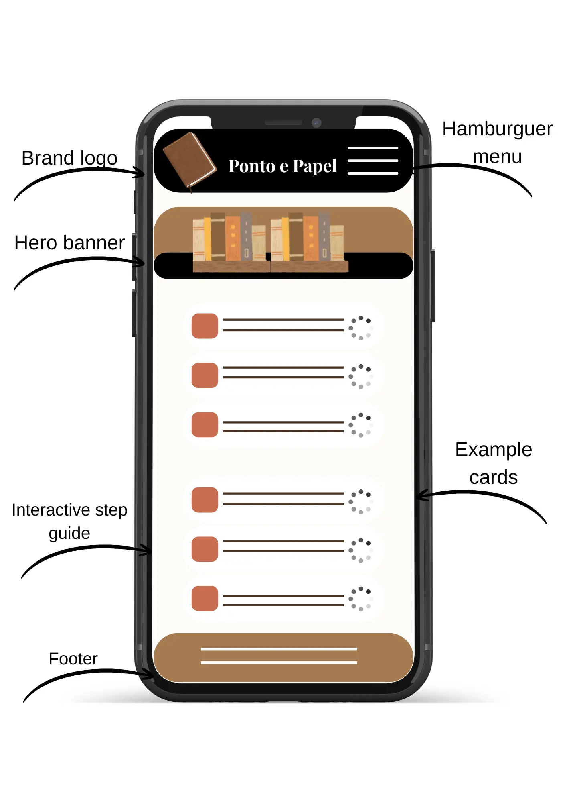
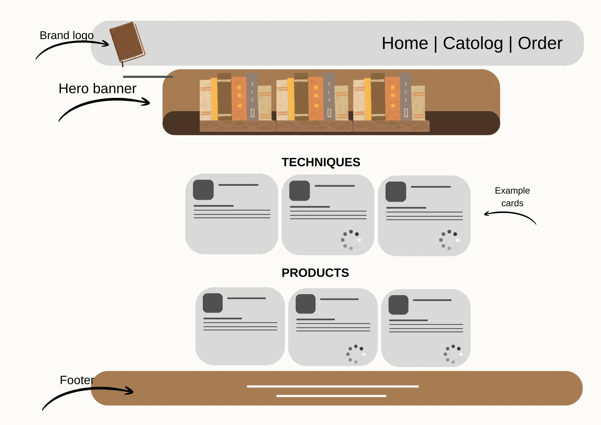

1. Site Name
Chosen Name: Papel & Ponto (Paper & Stitch Studio)
Rationale: The name directly references the two fundamental core raw materials of hand bookbinding: the thread stitch and the paper sheet. It conveys a warm, artisanal, and refined identity.
Optional Domain Availability: papeleponto.com or papeleponto.art
2. Site Purpose
The Papel & Ponto website serves as a dynamic, educational catalog showcasing handcrafted bookbinding techniques and bespoke stationery. It allows enthusiasts, artists, and prospective clients to explore different book structures (such as Coptic, Pamphlet, and Japanese binding), evaluate paper weights for specific mediums, bookmark favorite items directly in their web browser, and request custom order quotes through an interactive form.
3. Target Audience Scenarios
- Scenario 1: "I work with watercolor painting and need a handmade sketchbook that opens completely flat (180°) with heavy-weight paper. Which binding structure and paper combination best fits my workflow?"
- Scenario 2: "I want to order a customized planner with custom cover foil stamping for a holiday gift. How can I browse cover finishes and request a price quote?"
4. Color Scheme
The color palette employs rich, earthy tones reminiscent of handmade rag paper, natural leather, cotton threads, and organic pigments.
#4A3525
Dark Terracotta (Headings, primary text, dark accents)
#A67C52
Raw Sienna / Soft Brown (Buttons, borders, highlights)
#C86D51
Clay Clay (Links, badges, interactive elements)
#FDFBF7
Cotton Rag Creme (Page background)
5. Typography
Heading Style: Playfair Display (Serif)
This classic and elegant serif font will be used for all structural headings (H1, H2, H3) to highlight the traditional craftsmanship and artisanal quality of the studio.
Body Text Style: Montserrat (Sans-serif): This modern, clean typeface will handle all body copy, navigation menus, buttons, and form inputs to ensure readability across all mobile and desktop devices.
6. Homepage Wireframes
Layout sketches illustrating responsive design structures for mobile and desktop screens on the main index page.
Mobile Layout (320px)

Desktop Layout
